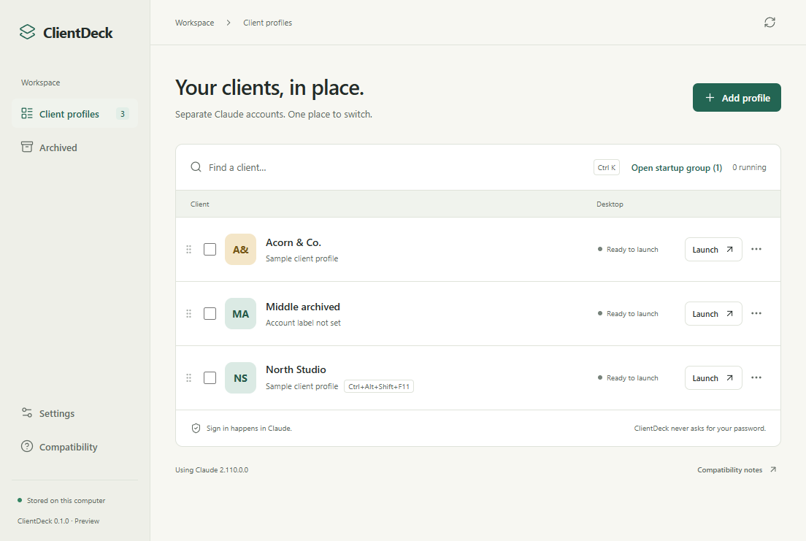
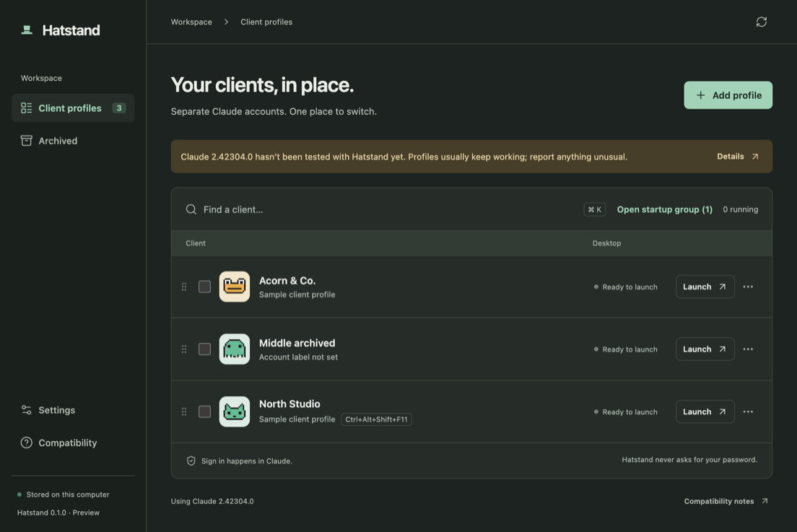
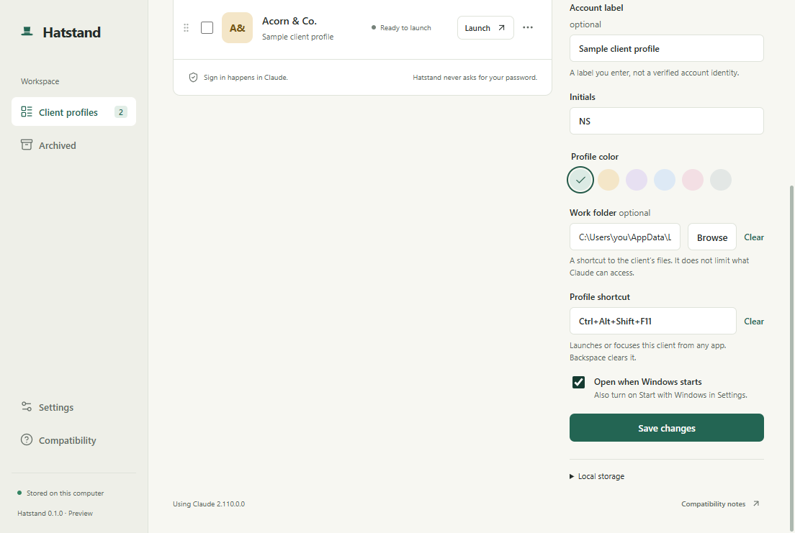
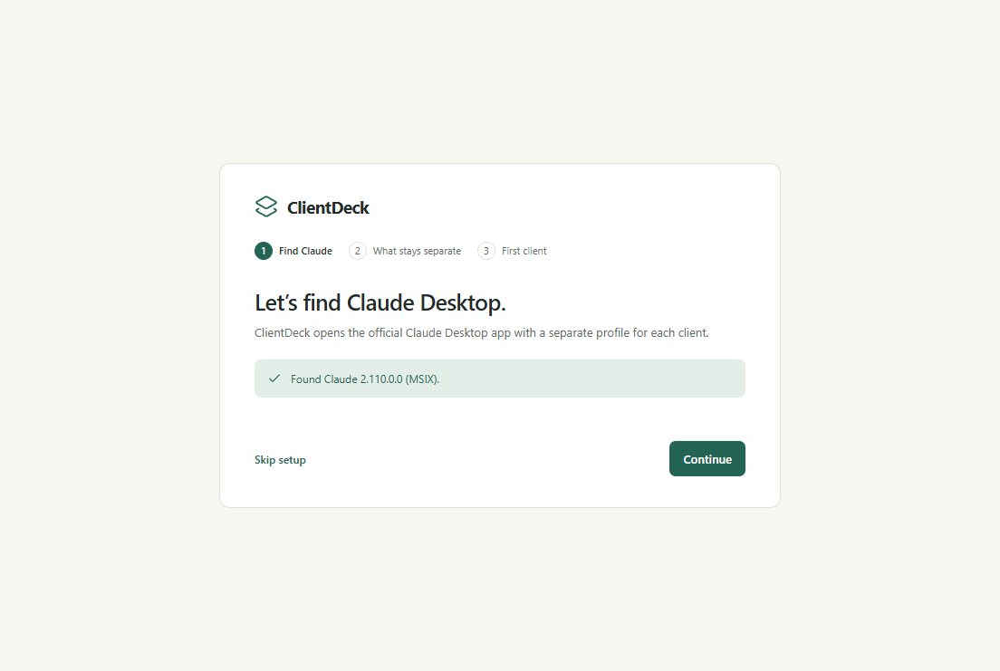
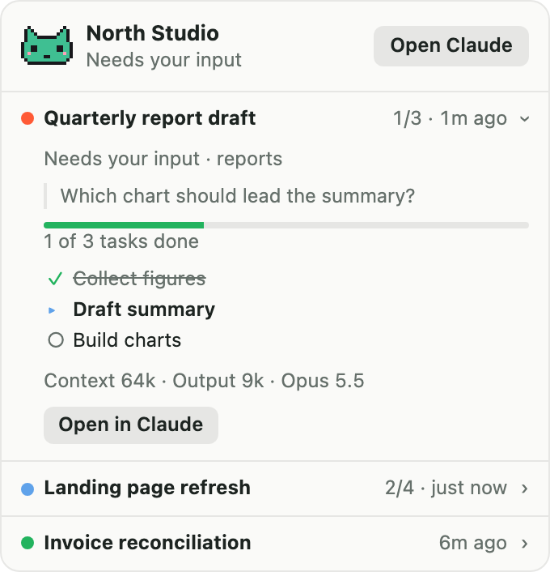

One hat per client.
Hatstand lets you use multiple Claude Desktop accounts on one computer, each client in its own profile. Switch between clients in a keystroke, and never sign out and back in again.
Windows 11 x64 · Requires the official Claude Desktop app · Preview release


Three clients. Three Claude accounts. One sign-in at a time.
If you're a consultant, freelancer, or agency, each client may give you their own Claude account. Claude Desktop holds one account at a time, so switching means signing out, signing in, and hoping you're typing into the right one.
- North StudioSigned in and ready. Ctrl+Alt+1 brings it forward.
- Acorn & Co.Running in its own window, with its own chats.
- RiverlineOpens automatically when Windows starts.
Set up each client once.
Hatstand starts the official Claude Desktop app with a separate data folder for each client, so every client keeps its own sign-in.
Add a client
Give it a name, a color, and optionally a keyboard shortcut and a work folder.
Launch and sign in
A fresh Claude window opens. Sign in with that client's account, inside Claude itself.
Switch any time
Launch or focus from the list, the tray, a shortcut, or the taskbar. You stay signed in.
Small, fast, and built for switching all day.
Keyboard first
A global shortcut opens Hatstand, per-client shortcuts jump straight to a client, and Ctrl+K searches.
Open several at once
Tick the clients you need today, or mark a startup group that opens when Windows starts.
Status you can trust
Shows whether a client's Claude is running. On a Mac, its menu-bar pet says when Claude Code needs you or is done, straight from Claude Code itself.
Client work folders
One click opens the client's files, from the list or the tray.
Careful with your data
Removing a client keeps its data by default. Cleanup goes to the Recycle Bin, never straight to deletion.
Private by design
No accounts, no telemetry, and it never sees your password. It only goes online when you check for updates.
Looks at home on Windows and Mac, in light or dark.



What stays separate, and what doesn't.
Hatstand is honest about its limits. It's a profile launcher, not a security sandbox. See the full compatibility results.
Separate
- Each client's Claude sign-in
- Chats and Desktop settings
- Staying signed in after quitting and reopening
Shared
- Your Windows user account
- Files, clipboard, and network
- Local services on your computer
Not yet verified
- Cowork and Desktop Code separation
- Signing out of one client only
- Staying signed in after a reboot
Questions
Can I use multiple Claude accounts on one computer?
Yes. Claude Desktop holds one account at a time, but Hatstand starts it with a separate profile for each client, so each account stays signed in and you can run several side by side.
Is Hatstand made by Anthropic?
No. Hatstand is an independent open-source project and isn't affiliated with, endorsed by, or supported by Anthropic. You install Claude Desktop from Anthropic and sign in inside it; Hatstand only starts it with a separate profile folder.
Does Hatstand see my password or chats?
No. Sign-in happens entirely inside Claude. Hatstand stores client names, colors, and preferences on your computer, and its logs contain only profile IDs.
Could a Claude update break it?
Possibly. Hatstand relies on a Claude Desktop setting that Anthropic doesn't document. If an update changes it, Hatstand shows the client as failing to start and leaves your default Claude sign-in untouched. It also warns when your Claude version hasn't been tested yet.
Is it safe to keep clients apart this way?
It keeps accounts and chats apart, but every profile runs as the same Windows user, with access to the same files and clipboard. If a client requires strict isolation, use a separate Windows account or virtual machine.
Why does Windows warn me when I install it?
Preview builds aren't code-signed yet, so SmartScreen may show an "unknown publisher" warning. Each release includes SHA-256 checksums so you can verify the download first.
Is there a Mac version?
A macOS preview for Apple silicon is in the repository, with menu-bar pets for each client. Signed Mac downloads come later; for now you can build it from source.
What does it cost?
Nothing. Hatstand is free and MIT-licensed. Contributions, bug reports, and compatibility results are welcome on GitHub.
Hang up the sign-out routine.
Download Hatstand, add your first client, and switch between accounts the way you switch between windows.
Download for Windows